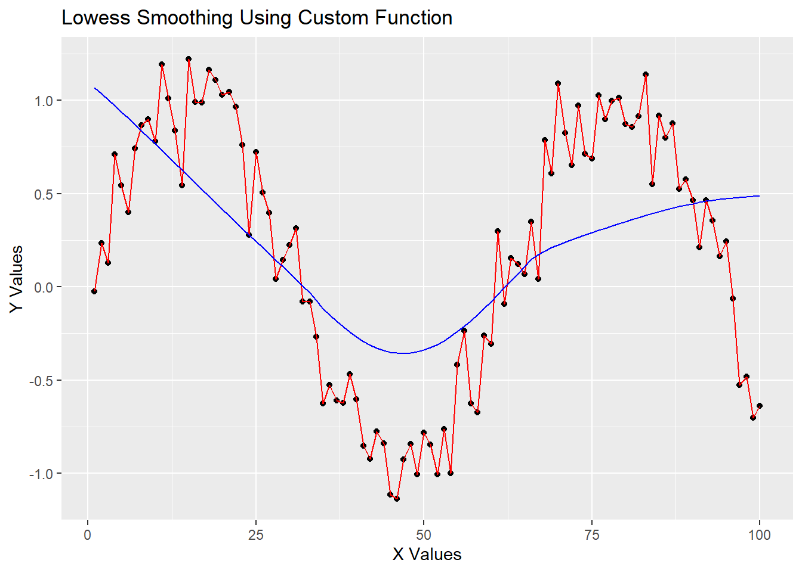
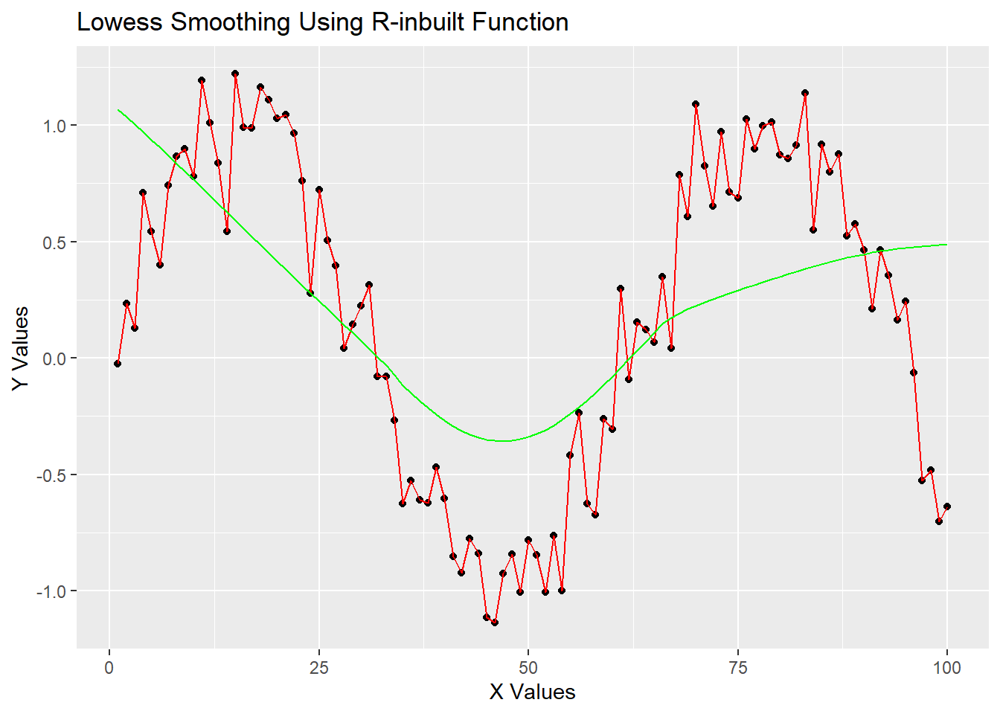

set.seed(1)3 Practical Two/Three
3.1 Generate Simulated Data:
3.1.1 1.1
Set your seed to 1, i.e. set.seed(1).
3.1.2 1.2
Create \(x\) as a sequence of numbers from 1 to 100.
x <- 1:1003.1.3 1.3
Generate \(y\) as a noisy sine wave such that \(y_i = sin(\frac{x_i}{10}) +e_i\) where \(e_i \sim N(0, 0.2^2)\)
y <- numeric(100)
for (i in 1:100 ){
y[i] <- sin(x[i]/10) + rnorm(1, mean=0, sd = 0.2)
}# Define the span f which defines the number of closest neighbours to use when smoothing point xi
f <- 0.693.2 Implement the LOWESS Algorithm:
3.2.1 2.1
Define a function customLowess(x, y, f) that returns the smoothed values
# Function to find the weights
lowess_weights <- function(x_target, x_neighbors, d_max) {
# Compute the absolute distances between the target and neighbors
distances <- abs(x_target - x_neighbors)
# Calculate the weights using the tricubic formula
weights <- (1 - (distances / d_max)^3)^3
weights[distances > d_max] <- 0 # No weight for points farther than d_max
return(weights)
}
# Function to find the Beta Coefficients to perform the weighted linear regression
lowess_beta <- function(x, y, w ){
x<- cbind(1,x)
w <- diag(w)
beta<- solve(t(x)%*%w%*%x)%*%t(x)%*%w%*%y
return(beta)
}
# Function to perform LOWESS smoothing
lowess_smoothing_func <- function(x, y, f) {
n <- length(x)
k <- ceiling(f * n) # Number of neighbors based on the span
smoothed_y <- numeric(n)
for (i in 1:n) {
# Find the k closest neighbors for each point
distances <- abs(x[i] - x)
neighbor_indices <- order(distances)[1:k] # gets the largest k distances
x_neighbors <- x[neighbor_indices]
y_neighbors <- y[neighbor_indices]
# Compute d_max (max distance between the target and neighbors)
d_max <- max(distances[neighbor_indices])
# Compute the weights for the neighbors
weights <- lowess_weights(x[i], x_neighbors, d_max)
betas <- lowess_beta(x_neighbors,y_neighbors,weights)
smoothed_y[i] <- betas[1] + betas[2]*x[i]
}
return(smoothed_y)
}
smoothed_y <- lowess_smoothing_func(x, y, f)
custom_loess <- list(x, smoothed_y)
custom_loess[[1]]
[1] 1 2 3 4 5 6 7 8 9 10 11 12 13 14 15 16 17 18
[19] 19 20 21 22 23 24 25 26 27 28 29 30 31 32 33 34 35 36
[37] 37 38 39 40 41 42 43 44 45 46 47 48 49 50 51 52 53 54
[55] 55 56 57 58 59 60 61 62 63 64 65 66 67 68 69 70 71 72
[73] 73 74 75 76 77 78 79 80 81 82 83 84 85 86 87 88 89 90
[91] 91 92 93 94 95 96 97 98 99 100
[[2]]
[1] 1.067771329 1.035792819 1.003412946 0.970639271 0.937487155
[6] 0.903976633 0.870132585 0.835985201 0.801568040 0.766916701
[11] 0.732068424 0.697061925 0.661935416 0.626726835 0.591474918
[16] 0.556219775 0.520999893 0.485851829 0.450809632 0.415903191
[21] 0.381157199 0.346590127 0.312212456 0.278024841 0.244016825
[26] 0.210165300 0.176426860 0.142728623 0.108953817 0.074918366
[31] 0.040328673 0.004718096 -0.032621718 -0.072629157 -0.116141986
[36] -0.150883266 -0.183888327 -0.214794983 -0.243274432 -0.269024825
[41] -0.291774829 -0.311318272 -0.327497814 -0.340176458 -0.349247043
[46] -0.354635106 -0.356275159 -0.354126166 -0.348197843 -0.338565039
[51] -0.325329237 -0.308649915 -0.288724172 -0.265766712 -0.240004742
[56] -0.211688604 -0.181083395 -0.148467064 -0.114136770 -0.078409116
[61] -0.041599415 -0.004024795 0.033989282 0.072078345 0.109828778
[66] 0.146812555 0.172714417 0.193417002 0.210562737 0.225609067
[71] 0.239489339 0.252723106 0.265579355 0.278190223 0.290614363
[76] 0.302873053 0.314967827 0.326887684 0.338614081 0.350123129
[81] 0.361387073 0.372375845 0.383057687 0.393398953 0.403364041
[86] 0.412917672 0.422024045 0.430647008 0.438750368 0.446299441
[91] 0.453261302 0.459605503 0.465305025 0.470335307 0.474674612
[96] 0.478304911 0.481211951 0.483387296 0.484831084 0.4855524913.3 Compare with R’s Built-in lowess()
3.3.1 3.1
Use the built-in lowess() function with the same f value. You will also need to set the iter argument to 0.
lowess_results <- lowess(x, y, f, iter=0)
lowess_results$x
[1] 1 2 3 4 5 6 7 8 9 10 11 12 13 14 15 16 17 18
[19] 19 20 21 22 23 24 25 26 27 28 29 30 31 32 33 34 35 36
[37] 37 38 39 40 41 42 43 44 45 46 47 48 49 50 51 52 53 54
[55] 55 56 57 58 59 60 61 62 63 64 65 66 67 68 69 70 71 72
[73] 73 74 75 76 77 78 79 80 81 82 83 84 85 86 87 88 89 90
[91] 91 92 93 94 95 96 97 98 99 100
$y
[1] 1.067771329 1.035792819 1.003412946 0.970639271 0.937487155
[6] 0.903976633 0.870132585 0.835985201 0.801568040 0.766916701
[11] 0.732068424 0.697061925 0.661935416 0.626726835 0.591474918
[16] 0.556219775 0.520999893 0.485851829 0.450809632 0.415903191
[21] 0.381157199 0.346590127 0.312212456 0.278024841 0.244016825
[26] 0.210165300 0.176426860 0.142728623 0.108953817 0.074918366
[31] 0.040328673 0.004718096 -0.032621718 -0.072629157 -0.116141986
[36] -0.150883266 -0.183888327 -0.214794983 -0.243274432 -0.269024825
[41] -0.291774829 -0.311318272 -0.327497814 -0.340176458 -0.349247043
[46] -0.354635106 -0.356275159 -0.354126166 -0.348197843 -0.338565039
[51] -0.325329237 -0.308649915 -0.288724172 -0.265766712 -0.240004742
[56] -0.211688604 -0.181083395 -0.148467064 -0.114136770 -0.078409116
[61] -0.041599415 -0.004024795 0.033989282 0.072078345 0.109828778
[66] 0.146812555 0.172714417 0.193417002 0.210562737 0.225609067
[71] 0.239489339 0.252723106 0.265579355 0.278190223 0.290614363
[76] 0.302873053 0.314967827 0.326887684 0.338614081 0.350123129
[81] 0.361387073 0.372375845 0.383057687 0.393398953 0.403364041
[86] 0.412917672 0.422024045 0.430647008 0.438750368 0.446299441
[91] 0.453261302 0.459605503 0.465305025 0.470335307 0.474674612
[96] 0.478304911 0.481211951 0.483387296 0.484831084 0.4855524913.3.2 3.2
Plot both curves to compare their smoothing values.
library(ggplot2)
ggplot() +
geom_point(aes(x = x, y = y)) + # First scatter plot
geom_line(aes(x = x, y = y), color = "red") + # Red line for first set of points
geom_line(aes(x = as.numeric(unlist(custom_loess[1]))), y = as.numeric(unlist(custom_loess[2])), color = "blue") + # Blue line for second set of points
ggtitle("Lowess Smoothing Using Custom Function") +
xlab("X Values") +
ylab("Y Values")
library(ggplot2)
ggplot() +
geom_point(aes(x = x, y = y)) + # First scatter plot
geom_line(aes(x = x, y = y), color = "red") + # Red line for first set of points
geom_line(aes(x = as.numeric(unlist(lowess_results[1]))), y = as.numeric(unlist(lowess_results[2])), color = "green") + # Blue line for second set of points
ggtitle("Lowess Smoothing Using R-inbuilt Function") +
xlab("X Values") +
ylab("Y Values")